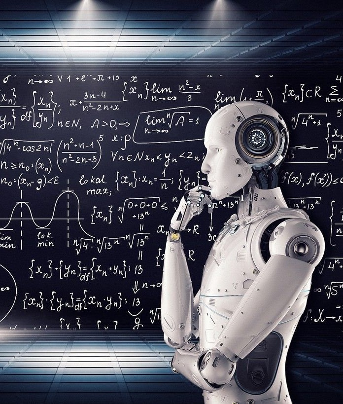

دور الذكاء الاصطناعي في استكشاف افضاء

وصل استخدام الذكاء الاصطناعي إلى مجال الفضاء، حيث بات يلعب دورًا حاضرًا في هذا المجال. فكيف تساعد هذه التقنية في علوم الفضاء؟ هذا ما سيتم تسليط الضوء عليه في هذه المقالة.
بدأت فكرة استخدام الذكاء الاصطناعي في علوم الفضاء بالفيلم الأميركي "أوديسة الفضاء: 2001" الذي تم إصداره عام 1968. ورغم أنّ هذا المفهوم كان خيالًا عِلميًّا، إلّا أنه لم يعد كذلك بعد الآن، ذلك أنّ علماء الفضاء باتوا يستخدمون الخوارزميات لتوقّع إمكانية الحياة على الكواكب الأخرى في النظام الشمسي، أو للكشف عن احتمالية وجود الماء، أو محاولة اكتشاف إمكانيات الثقب الأسود، أو تحديد المنحنى المداري لجرم سماوي وغيرها. ووفقًا لمسؤولي الإدارة الوطنية للملاحة الفضائية والفضاء الأميركية (ناسا)، يمكن أيضًا للذكاء الاصطناعي أن يساعد في الكشف عن الكويكبات القريبة من الأرض في الفضاء، وكذلك اختصار الوقت والجهد الذي يستغرقه علماء الفضاء في العمل، وذلك من خلال الاستعانة بنماذج التعلّم الآلي والتي من خلالها يمكن التنبّؤ باحتمالية اصطدام كوكبٍ بآخر وفق ما أعلن باحثون من جامعة "برينستون" في الولايات المتحدة مؤخّرًا.
في دراسة جديدة، تم نشرها في "PNAS" وهي مجلة علمية أميركية رائدة، أطلق علماء على نموذج ذكاء اصطناعي خاص بهم اسم "سبوك" ويعني "استقرار تكوينات المدارات الكوكبية كلاسفير"، بوسعه التنبؤ بمسارات الكواكب الخارجية، وتحديد أي منها سيظلّ مُستقرًّا، وأيّها قد يصطدم بنجومٍ أخرى، وذلك بشكلٍ دقيقٍ أكثر من قدرة العلماء البشر على ذلك. وقد حاول الفلكيون في الماضي معالجة مشكلة الاستقرار المداري، بمن فيهم "إسحاق نيوتن" من خلال علم الرياضيات، إلّا أنه لم يجد أحد طريقة التنبّؤ بالتكوينات المستقرّة نظريًّا. ومن خلال الدراسة، يمكن للباحثين العمل على الجمع بين النماذج المبسّطة للتفاعلات الديناميكية للكواكب مع طرق التعلّم الآلي، وهذا سيسمح بتحديد الاستقرار طويل المدى للكواكب بشكلٍ سريع وموثوق به. ومع نموذج الذكاء الاصطناعي الجديد هذا، "يمكن فهم ديناميكيات الكواكب المدارية، بما في ذلك تلك الموجودة في نظامنا الشمسي" وهذا ما يؤكّده "دانييل تامايو" وهو أحد الباحثين المشاركين في الدراسة.
هذا التطوّر المثير للاهتمام في الذكاء الاصطناعي لعلوم الفضاء ليس الأوّل من نوعه، ففي مارس من العام الماضي استعان العلماء في جامعة تكساس الأميركية بالاشتراك مع "غوغل" بهذه التقنية للعثور على كوكبين صخريين كانا مخفيين في أرشيف بيانات تلسكوب "كيبلر" الفضائي التابع لـ "ناسا". وقد تمّ ذلك من خلال استخدام خوارزمية تنتقل عبر البيانات التي أخذها "كيبلر" لاستخراج الإشارات التي فاتتها طرق اكتشاف الكواكب التقليدية. وفي نوفمبر الماضي، اكتشف نموذج للشبكة العصبية يستند على التعلّم الآلي ومستوحى من بنية الدماغ إلى نتيجةٍ جليّة مفادها أنّ الشمس لا بد من أن تكون في مركز النظام الشمسي. ويُعَد هذا الإنجاز واحدًا من الاختبارات الأولى لتقنيةٍ يأمل الباحثون أن يتمكّنوا من استخدامها في اكتشاف قوانين جديدة للفيزياء، وربما إعادة صياغة ميكانيكا الكَمّ، عن طريق اكتشاف الأنماط في مجموعات البيانات الكبيرة.
من جهتها، كشفت وكالة "ناسا" مؤخّرًا عن نظام ذكاءٍ اصطناعي يساعد على إيجاد الحياة على الكواكب الأخرى في النظام الشمسي، خاصة على كوكب المريخ. وستساعد خوارزميات التعلّم الآلي، أجهزة الاستكشاف على تحليل عيّنات التربة على المريخ، وإعادة البيانات الأكثر صلة، وهذا من شأنه التحسين من كفاءة نقل البيانات، حيث أنّ نقل البيانات وكثرتها تعدّ عملية مكلفة ومستهلكة للوقت خصوصًا أنّ "ناسا" تجمع ما يقارب 2 جيغابايتس كل 15 ثانية من البيانات المتأتّية من مركباتها الفضائية. كما تسعى الوكالة لاستخدام هذه التقنية في المهام المستقبلية إلى كوكبي المشتري وزحل. وحتّى الآن، جرى تدريب النظام على تحليل مئات عينات الصخور فضلًا عن الآلاف من الأطوال الموجية للإشعاع الكهرومغناطيسي، ووصلت الدقة إلى نسبة تجاوزت الـ 90%.
في المحصّلة، إنّ استكشاف الفضاء يؤدي إلى نشوء كمياتٍ هائلة من البيانات التي لا يمكن تحليلها من خلال الذكاء البشري فقط، وهنا باتت الحاجة مُلحة للاستعانة بتطبيقات الذكاء الاصطناعي في هذا المجال. ومن خلال تحليل معنى البيانات واستخلاص النتائج، يمكن لهذه التقنية أن تكون عامل تمكين وتغيير في مسار علوم الفضاء، كما قد تساعد في تحديد الأنماط التي لم يكن البشر على درايةٍ بها، وهذا ما يفتح الباب على إنجازات علمية أوسع مع هذه التقنية في المستقبل.